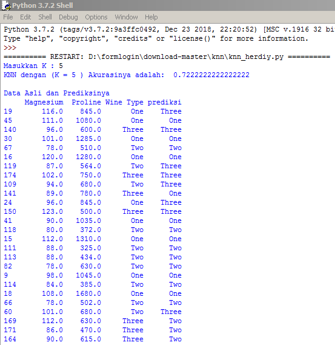

Implementasi KNN menggunakan Python¶
Sekarang saya akan mengimplementasikan penggunaan algoritma K - Nearest Neighbor dengan menggunakan dataset " wine_dataset.csv " dan menggunakan bahasa pemrograman python versi 3.7.2.
Pada dataset tersebut saya akan mencoba memprediksi wine type dengan menggunakan fitur atau kolom Magnesium dan Proline.
Berikut merupakan langkah - langkahnya :¶
- Langkah 1 ( Install Library )
pip install pandas
pip install sklearn- Langkah 2 ( Import library )
### Import librari terlebih dahulu
import pandas as pd
from sklearn.neighbors import KNeighborsClassifier
from sklearn.model_selection import train_test_splitLibrari pandas digunakan untuk mengambil atau input data csv dan librari sklearn digunakan untuk menghitung knn dan mengklasifikasikannya.
- Langkah 3 ( memanggil file csv )
### Memanggil file csv dengan librari pandas
data_orj = pd.read_csv("wine_dataset.csv")- Langkah 4 ( Memanggil semua data )
### Mengambil semua data untuk percobaan
data = data_orj.loc [:,'Alcohol':'Wine Type']- Langkah 5 ( Memeanggil 2 kolom fitur dan 1 kolom class )
### Mengambil 3 kolom
data_knn = data[['Magnesium','Wine Type','Proline']]Wine type = sebagai kolom class
Magnesium dan Proline = sebagai 2 kolom fitur yang akan di hitung distancenya
- Langkah 6 ( Membuat inputan K )
### Input jumlah K atau jumlah tetangga terdekat
inK = int(input("Masukkan K : "))- Langkah 7 ( Mencari knn dan split data x dan y )
### Mencari knn dengan menggunakan sklearn neighbors clssifier
knn = KNeighborsClassifier(n_neighbors = inK)
x,y = data_knn.loc[:,data_knn.columns != 'Wine Type'], data_knn.loc[:,'Wine Type']
x_train,x_test,y_train,y_test = train_test_split(x,y,test_size = 0.3, random_state = 42)
knn.fit(x_train,y_train)
prediction = knn.predict(x_test)sintaks diatas merupakan sintaks untuk mencari knn dan mensplit data 2 kolom fitur yaitu kolom magnesium dan proline, dan 1 kolom class yaitu wine type.
- Langkah 8 ( Tampilan akurasi dan prediksi data )
print('KNN dengan (K =',inK,') Akurasinya adalah: ', knn.score(x_test,y_test))
print("")
datatest = pd.DataFrame(x_test)
datatest["Wine Type"] = y_test
datatest["prediksi"] = prediction
print ("Data Asli dan Prediksinya")
print (datatest)- Hasil run program di atas

Jadi, itu saja yang dapat saya jelaskan semoga ilmunya bermanfaat dan dapat diterima dengan baik.